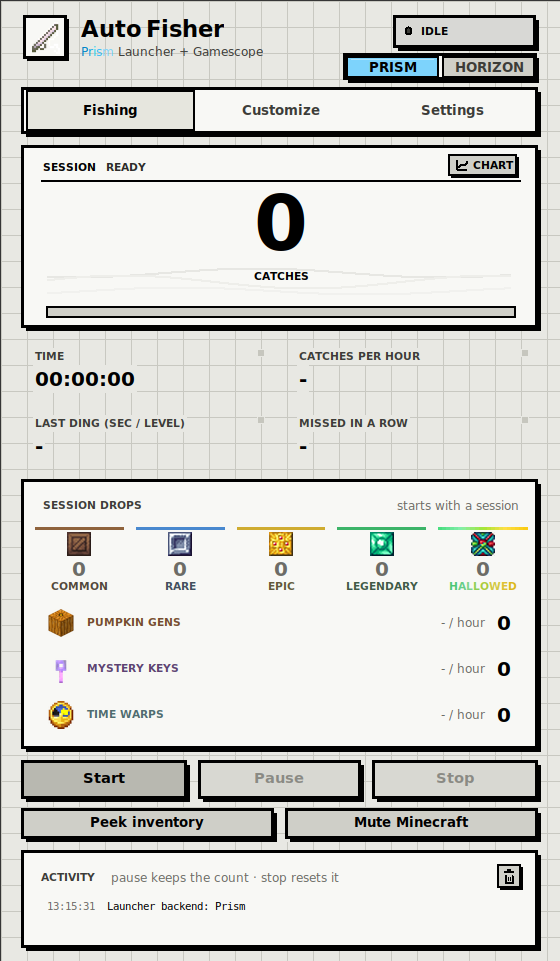
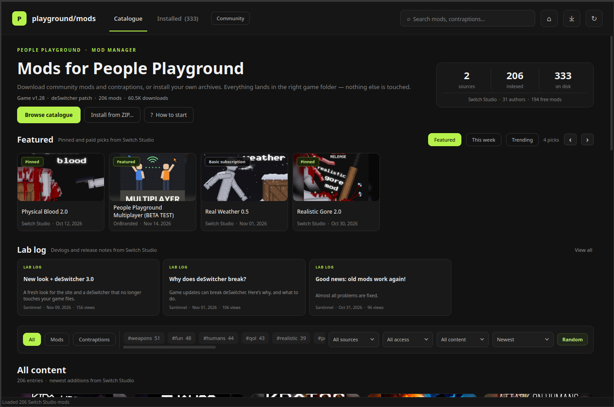
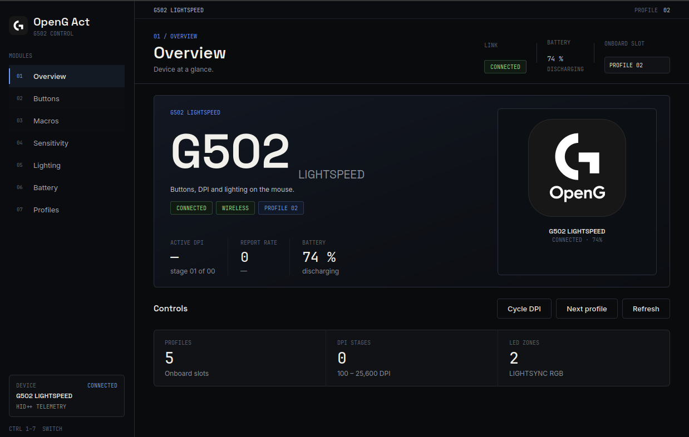

My Portfolio: For My First Hackathon
My name is Fares, Im 15, I like Linux, and I enjoy coding.
Hope you like it! Its my first official project. I Wanted it to be something small to get used to publishing. Ive made other projects before for fun, but this is the first one I would like to share for my first hackathon.
My Projects
I have worked on several projects in the past months, Such as: A Simple Mouse control center for my logitech g502 Wireless mouse since one wasnt created for Arch Linux, And some others are way to complex. A Game mod manager and downloader for a game called "People Playground" That pulls mod files directly from a third party website and downloads them for you, and also allows you to manage your mods by disabling and enabling mods without deleting. An Autofisher for a game called Minecraft that automatically fishes using virtual inputs and a tracking system with notifications and customizable themes and features
My Switch to Linux
Ive been using Linux for a few months now, and I love it! I personally like the freedom and control it provides. Though I still have a lot to learn. Below is a picture of my current setup.

Some projects of mine

Auto Fisher
One of the best designs Ive created for a project. Two modes: Prism and Horizon. Which are different minecraft launchers

Playground Mods
Useful for managing and downloading mods.Pulls mods from a popular modding website.

OpenG Act
My mouse control tool. I use it for everyday use. With complete macro support and RGB lighting.